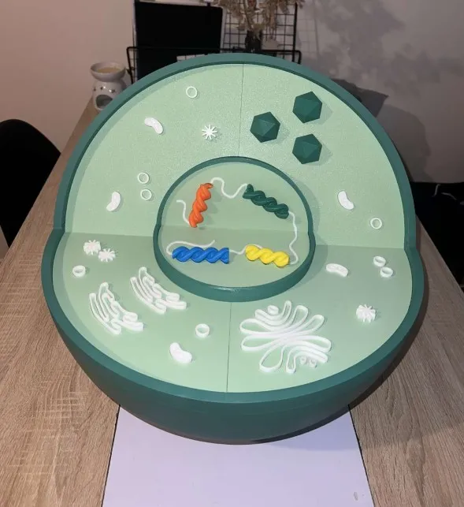

Écrans et affichages
Un écran intégré pour afficher un schéma, une animation ou une vidéo de démonstration directement dans la maquette.
Bureau d'études et atelier de maquettiste à Nantes. De l'idée à l'objet : conception, modélisation 3D, fabrication, électronique intégrée.

Les maquettes interactives sont notre force :
nous intégrons l'électronique directement dans la maquette pour qu'elle se manipule et se démontre.



Un écran intégré pour afficher un schéma, une animation ou une vidéo de démonstration directement dans la maquette.
Éclairage, chenille lumineuse, séquences qui guident le regard ou montrent le fonctionnement d'un procédé.
Le visiteur appuie, approche la main ou tourne un bouton : la maquette réagit et déclenche lumière, écran ou mouvement.
Éléments qui tournent, coulissent ou s'ouvrent, pour montrer un mécanisme ou découvrir l'intérieur d'un équipement.
Usages : retail et PLV (présentoir, magasin, vitrine), salon et stand, démonstrateur industriel (voir nos maquettes industrielles), médiation scientifique et musée. Nous réalisons aussi des maquettes d'architecture, de design produit et pédagogiques ou scientifiques.
Nous faisons plus que des maquettes.
Design produit, modélisation 3D et maîtrise de nos machines (impression multi-matériaux, résine, laser, peinture, électronique) se retrouvent dans le même atelier.
Vous pouvez venir avec un plan, avec une idée à rendre faisable, ou seulement avec une idée sans dessin. Nous vous accompagnons de l'idéation jusqu'à la production.

Valider une forme, un encombrement ou un principe avant de lancer la fabrication.
Présenter une machine ou un procédé trop gros, trop cher ou trop sensible à déplacer.
Rendre un projet lisible pour un jury, une collectivité ou des acquéreurs.
Un objet qui attire l'œil sur le stand, appuie la vente et se transporte sans souci.
Des modèles pédagogiques qui rendent un phénomène ou un appareil compréhensible d'un coup d'œil.
Passer de l'idée à un objet que l'on montre à un investisseur, un partenaire ou un client.
Plans, fichier 3D, photos, croquis ou simple idée : tout point de départ convient. Dites-nous aussi à qui la maquette est destinée et pour quand.
Nous étudions votre projet et vous disons ce qui est faisable, à quelle échelle et avec quelles contraintes (taille, détail, transport).
Nous définissons avec vous ce que la maquette doit montrer, son échelle, ce qui s'allume ou bouge, et pour quel public.
Découpe en pièces, assemblage, démontage pour le transport : nous modélisons la maquette en 3D, avec un regard de design produit sur les proportions, les couleurs et la lisibilité.
Dans notre atelier à Nantes : impression 3D, ponçage, peinture, puis intégration de l'électronique (écrans, LED) et des pièces mobiles.
Retrait sur place à Nantes ou livraison partout en France, avec un emballage adapté si la maquette est démontable.
Bâtiment, quartier ou aménagement intérieur, à l'échelle de votre choix, pour un concours, une promotion immobilière ou une présentation client.
Machine, équipement, procédé (filtration, bioréacteur), stand ou produit reproduit fidèlement, avec électronique intégrée (écrans, LED), éléments interactifs et pièces mobiles si besoin, démontable et facile à transporter, pour une démonstration, un appel d'offres, un salon ou une présentation client.
Modèle en coupe, multicolore et peint, pour expliquer une cellule, un mécanisme ou un procédé en laboratoire, en école ou en médiation scientifique.
Prototype d'aspect ou maquette de gamme pour valider une forme, une couleur, une ergonomie avant l'industrialisation.
Un objet pour tester une forme, un mécanisme ou un usage, ou pour montrer le rendu final avant l'industrialisation.
Exposition, PLV, événementiel, présentation marketing, édition limitée : des objets conçus et fabriqués sur mesure pour porter votre image.
Une maquette validée peut devenir une petite série fabriquée dans notre atelier. Découvrez nos services de fabrication.

Modélisation, fabrication et finitions sont faites sur place, au quartier Canclaux. Vous pouvez passer voir le travail.
Écrans, LED, chenille lumineuse, éléments qui bougent : nous intégrons l'électronique pour une maquette interactive, qui se manipule et se démontre.
Vos clients font tourner la maquette sur écran avant même de la voir en vrai.
Nous savons prendre une demande en charge rapidement et répondre vite, urgences comprises : indiquez-nous l'échéance dès le premier message.
Nous rendons faisable une idée qui existe déjà, ou nous partons d'une simple idée sans dessin pour la concevoir avec vous, de l'idéation à la fabrication.
Vos plans et projets restent chez nous. Nous signons un accord de confidentialité si vous le demandez.
Caravane de présentation : maquette de vitrine pour le secteur du loisir, carrosserie imprimée en plusieurs couleurs dans la masse, vitres et feux en plexiglas.
Oui. Nous menons l'idéation et la conception avec vous : ce que la maquette doit montrer, l'échelle, les parties mobiles ou lumineuses, puis nous la modélisons en 3D et la fabriquons dans notre atelier à Nantes.
Un maquettiste : l'impression 3D est l'un de nos outils, à côté de la découpe, du ponçage, de la peinture et de l'électronique. Notre métier, c'est la conception de la maquette (modélisation 3D, design produit, choix des finitions) jusqu'à sa livraison.
Oui : maquette d'architecture, maquette industrielle, commerciale et de salon (démonstration, présentation client), maquette de design produit, maquette pédagogique et scientifique. Chaque maquette est conçue sur mesure à partir de vos plans, fichiers, photos ou d'une simple idée.
Nous choisissons la matière selon l'usage de la maquette (présentation, manipulation, démonstration). Ponçage, apprêt et peinture sont possibles selon le rendu attendu ; décrivez votre projet et nous vous conseillons dès l'étude de votre projet.
L'échelle se choisit librement selon votre projet. Une pièce unique est limitée par le volume de nos machines ; au-delà, la maquette est découpée en plusieurs parties puis assemblée.
Non. Avec des plans, des photos, des cotes ou même une simple description, nous pouvons modéliser la maquette nous-mêmes avant de la fabriquer.
Les délais vont d'une semaine à un mois selon le projet. Nous sommes très réactifs et les urgences sont possibles : chaque projet est sur devis sur mesure, demandez-nous le vôtre en précisant votre échéance.
Oui. Une maquette peut être imprimée en plusieurs couleurs ou peinte après impression, par exemple pour distinguer les parties d'un modèle pédagogique.
Oui, partout en France. Vous pouvez aussi retirer votre maquette à Nantes (Canclaux).
Oui, sur demande nous signons un accord de confidentialité (NDA) avant que vous nous transmettiez plans et fichiers. Vos documents ne sont utilisés que pour votre maquette.
Oui. Nous pouvons concevoir la maquette en plusieurs modules démontables, avec un emballage adapté, pour qu'elle voyage et se remonte facilement sur votre stand. Précisez-le dans votre demande.
Oui : objets et petits produits pour l'exposition, le marketing, le retail et les petites séries. Décrivez votre idée, même sans dessin, nous la rendons faisable et la fabriquons dans notre atelier à Nantes.
Chaque maquette est unique : le devis est sur mesure et gratuit, après étude de votre projet. Nous n'affichons pas de tarif public, car il dépend de la taille, du niveau de détail et des options (LED, pièces mobiles, finitions). Décrivez votre besoin, nous vous répondons rapidement.
Décrivez-nous votre besoin et votre échéance, nous vous répondons rapidement.